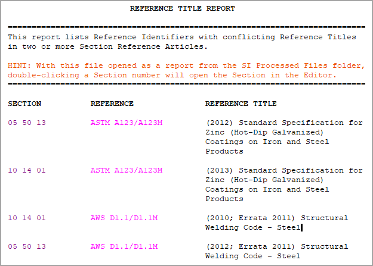
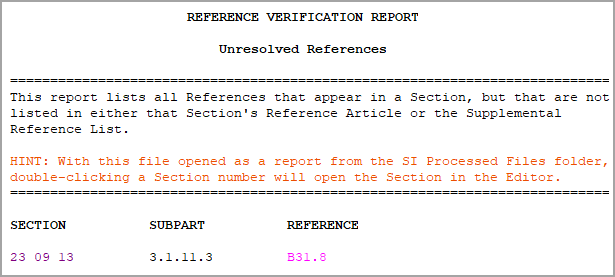

The Reference Verification Report is an essential diagnostic tool that provides results in two distinct reports, making the review process much easier. The first is the Reference Verification Report (REFVER.RPT). This report identifies any Reference Standards that are cited within your Sections but are missing from the Reference Article, detailing their organization, date, and title. The second is the Reference Title Discrepancies Report (TTLDIFFS.RPT). This report highlights Reference Identifiers (RIDs) that have conflicting or inconsistent Reference Titles in two or more Sections Reference Articles.
reference Verification
- Compares the References in each Section's text with those in its Reference Article and Supplemental Reference List.
- Identifies discrepancies by producing two separate Reference reports that list conflicting titles and unresolved References.
- Identifies Reference Identifiers that contain more than 30 characters.
Resolving Discrepancies
Reference Title Discrepancies
 Example of Reference Title Discrepancies:
Example of Reference Title Discrepancies:

Resolving Reference Title Discrepancies
- Compare the Reference titles to determine which is correct for the publication. If publication dates differ, the architect or engineer should review the publication to determine which applies to the Section.
- Edit the listed Sections' Reference Articles so that they all reflect the correct date and title for the publication.
- Check for typographical errors or extra spaces by performing one of the following:
- Click the Toggle Marks View button on the Toolbar
- Select the View menu and select Marks
- Use the keyboard shortcut Alt+X
Unresolved References
 Example of Unresolved References:
Example of Unresolved References:

Correcting Unresolved References
- Add the Reference and Reference Title (which includes the Publication date) to either the Section's Reference Article or Supplemental Reference List.
- If you made changes in the Supplemental Reference List, then run Reference Reconciliation again to automatically insert them in the Reference Articles.
Additional Learning Tools
 Watch the Reference Verification Report eLearning module within Chapter 6 - Correcting QA Report Errors and Discrepancies.
Watch the Reference Verification Report eLearning module within Chapter 6 - Correcting QA Report Errors and Discrepancies.